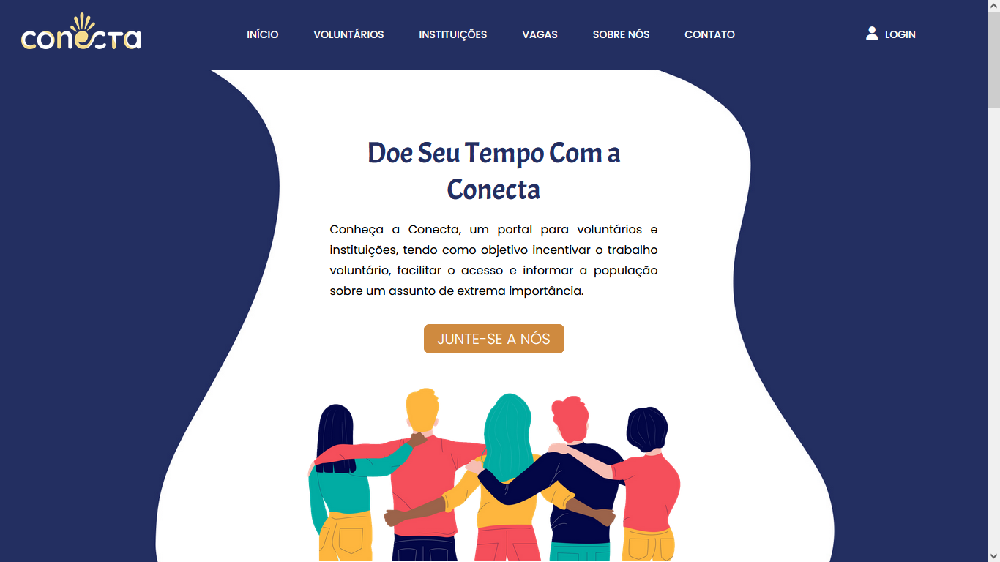

Conecta - TCC
TCC (Trabalho de conclusão de curso) desenvolvido para o curso técnico de Desenvolvimento de Sistemas - ETEC de Guaianases. A plataforma Conecta foi feita com o intuito de incentivar e informar sobre o voluntariado, como também facilitar a conexão entre instituições e voluntários.
detalhes
Há muitas funcionalidades e algumas formas de acesso ao conteúdo do site, elas são divididas entre: visitantes, voluntários, instituições e o ADM. Além dos CRUDs, também há a candidatura dos voluntários a vagas disponíveis, bem como o cancelamento dela, o deferimento e o indeferimento.
linguagens utilizadas
- HTML;
- CSS;
- JavaScript;
- PHP;
- SQL.